"The name Swampy"
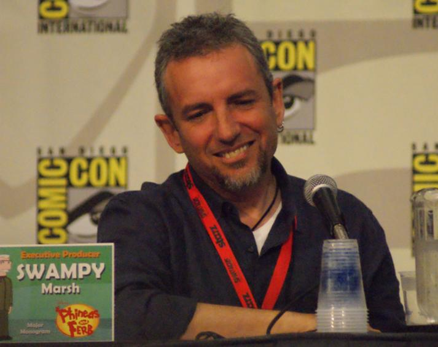While he was attending a college in England, people around him started calling him "Swampy" because it matched his last name as Marsh. Eventually Swampy liked that name so much that he decided to add it in as his nickname so whenever someone would call him or give him credit, they would call him by his nickname. It was also a way of making his name much longer than most of other people's name.
Phineas and Ferb's "Swampy" name easter eggs
Believe it or not, the name "Swampy" Marsh was actually mentioned by Phineas in the episode "What a Croc!". In it, Phineas and Ferb were watching the news and when they heard the people were trying to find a lost crocodile in the Swamp, Phineas stated "They're wasting their time in that Swampy Marsh"
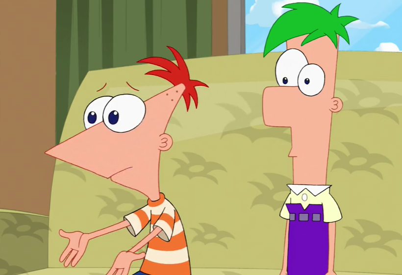There is another reference to "Swampy" Marsh in the episode "Excaliferb", when Phineas and his friends have to cross a swamp, Isabel (traditionally as Isabella) tells them "in order to get across this Swampy Marsh"
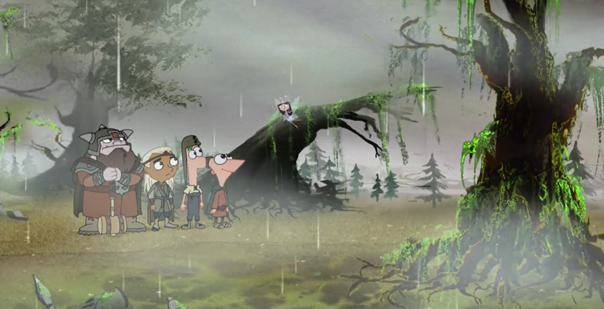In the episode " The Inator Method", while Candace and her best friend Stacy were playing a Ducky Momo game, one of the names of other people playing that had a top score was listed as "Dan & Jeff".
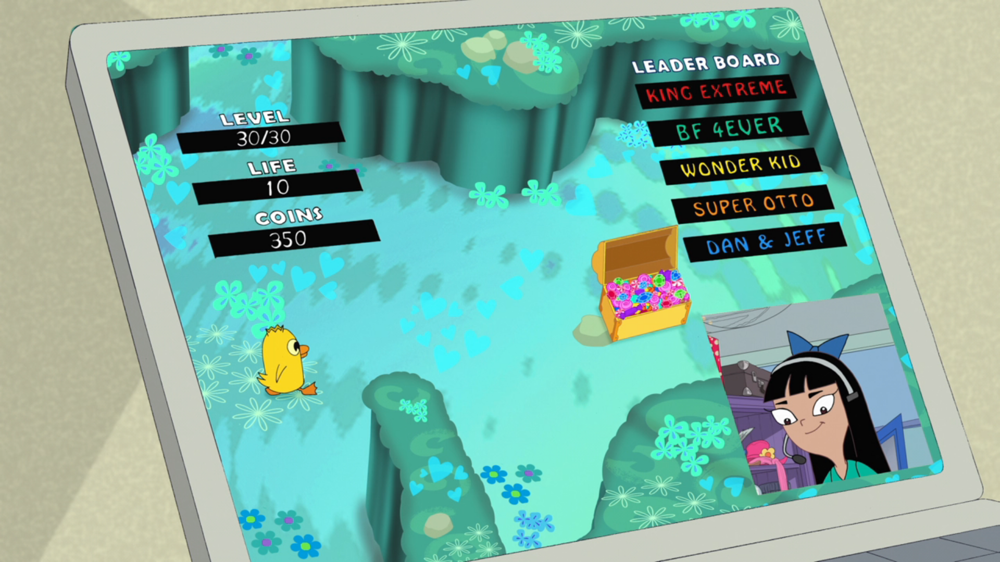Early life
He was born on 9th of December 1960 in Santa Monica, California. He lived with his stepfather, Bill Marsh, he adopted him and led to him getting the surname of Marsh. A lot of the activities that he would do during his childhood would eventually feed their way into ideas and plots for Phineas and Ferb & Milo Murphy's Law episodes, this includes going out, being active, digging trenches and tunnels, and constructing forts. His family was also into music which and the experienced he had with music at an early can definitely be seen on the two shows he worked on as basically all Phineas and Ferb episodes had at least one song in them somewhere (besides the main theme).
During his childhood, he would be creating and drawing realities and his mom supported him every idea he had no matter how weird or unrealistic it is. This trait can be seen in the character Linda Flynn-Fletcher from (the biological mother of Phineas; where she would support Phineas and Ferb with whatever idea they had for an invention to build). His grandfather was a successful band leader and musician and this gave Swampy the inspiration of getting into a creative career. During his summer, he would like to build go carts, tree houses and other things that are dangerous but yet he and his friends still built since it was the 60s and they didn’t know any better.
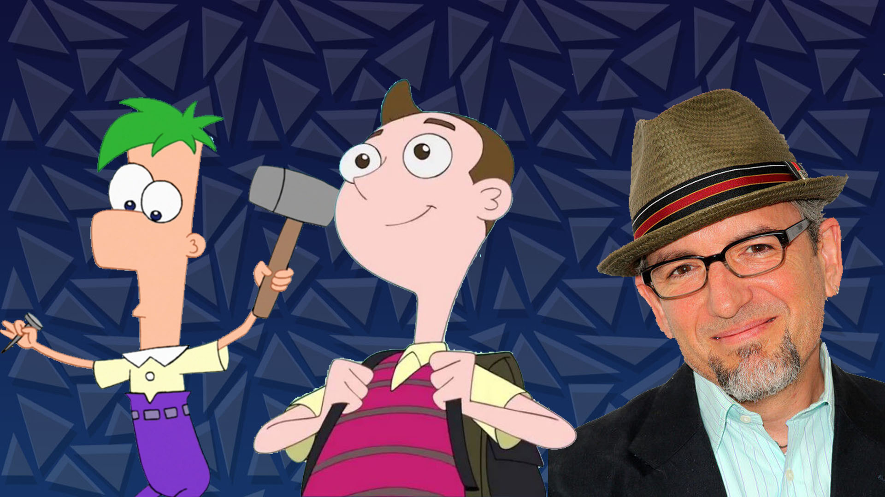Career before Phineas and Ferb
Swampy had a wide variety of jobs way before he started working on animation, this included:
- Car detailer
- Janitor
- Working in banks
He continued living on with a variety of jobs until one of his friends noticed his drawings and told him that he could get a job in animation, Swampy agreed as at the time he was unemployed and had a big mortgage. Three months later, he found himself working on the Simpsons drawing backgrounds.
Six days after getting a job in the Simpsons, he began to laugh out loud and burst into tears upon looking on his drawing table. His realisation of the fact that he was getting paid to be creative made him feel much better. Little did he know though that working on the Simpsons would eventually lead to him working with his future workmate that would help him develop Phineas and Ferb.
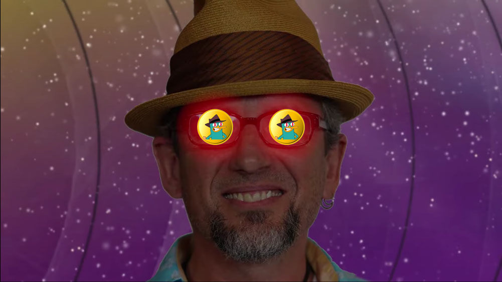After working on the Simpsons for some time, Dan moved into the same workspace as Swampy, just sitting across the aisle and they started talking to each other. Through this, they quickly realised that they were similar in a lot of ways, from being able to write music to being able to naturally joke around.
Because the Simpsons production had a cycle where artists would be replaced every few months, at some point, Swampy and Dan had to find a job at another place to keep making money but also be able to work together. At one point they applied for a job at nickelodeon. In there, they worked on Rocko’s modern life. This was the first time Swampy was able to direct and write with Povenmire. Because of this, Swampy and Dan were both able to develop their own style for making a cartoon. As a result, they were also able to develop their creativity as well. As a direct result, Dan and Swampy began to develop ideas and concepts for a show that would be based of their childhood summer vacations.
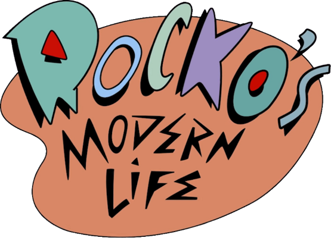When Dan finished having dinner, he came back to Swampy and showed him the concept of a Dorito headed boy (which would eventually become Phineas) and it caused them to start getting creative with their show. They wanted to make the show to represent how their life during their childhood was like back then for them instead of the modern culture where kids just watch movies and played video games all day and not go out.
However, whenever he and Dan would pitch Phineas and Ferb to various networks, the most common response as to why it initially didn't get accepted is due to it being seen as the plot of an episode would be too complicated for kids to understand, despite this, Dan and Swampy knew that kids were smarter than that so they kept trying. Although they sincerely wanted their show to not go in vain, they still had to make money for a living so they continued working on Rocko's modern life until it ended in 1996.
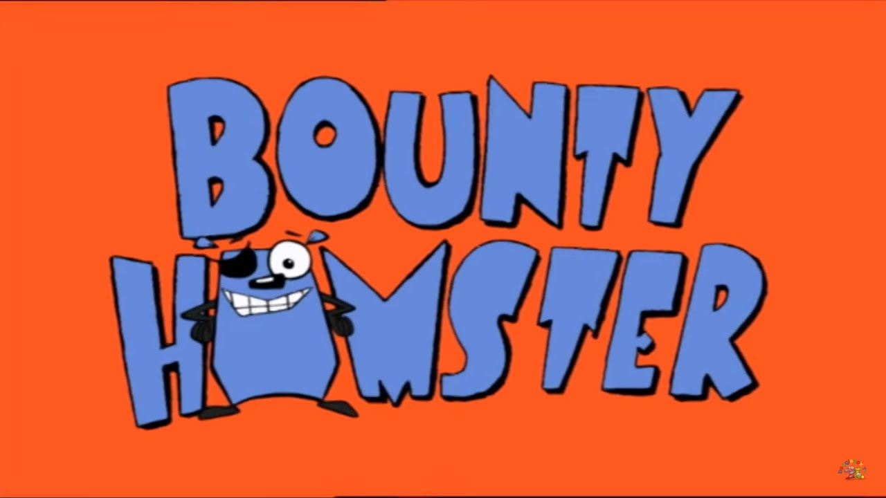He then moved to London as he was given an offer to come to London and help work on a show called "Aaagh! It's The Mr. Hell Show!" as BBC said they wanted this person to have someone who had prime time experience with animation. He took the job of being a storyboard supervisor instead of his traditional animation work and worked on an entire season of it. Towards the end of working there, he worked with other well known people in the industry such as Gareth Edwards and John Plowman. Due to animation taking lots of time, by the time he got to the end of production, the head of BBC left and a woman took the new position. She had a different mindset and ultimately said in a meeting that the show wasn’t necessary. Although he finished working on the show, America's job industry weren’t available for him at the time so he had to just stay in England and just take the animation job offers there such as working on Bounty Hamster where he worked on voice acting. This was his regular on pattern on switching between jobs regularly in England until the day Dan called him and said he managed to sell Phineas and Ferb. Although Dan failed at first to pitch the show to Disney, they called him about 9 months later to tell him their interested because now their goal for audiences have changed, they wanted a show that would attract boys but without alienating girls and they felt Phineas and Ferb was the perfect show for this.
Working on Phineas and Ferb
Once he heard that Povenmire sold Phineas and Ferb, he immeditaely flew back to America to help create the show that they have been trying to sell for 13 years now. When production started for the first episode "Rollercoaster", Povenmire and Swampy didn't go for the traditional pitch script or making a prototype for the pilot, they decided to put the animation together by using storyboards. This can be because their team did not want their show to look very similar to other cartoons that were already out (especially on Disney Channel) so they tried their best to not imitate the style of other shows, they wanted to be as original as possible.
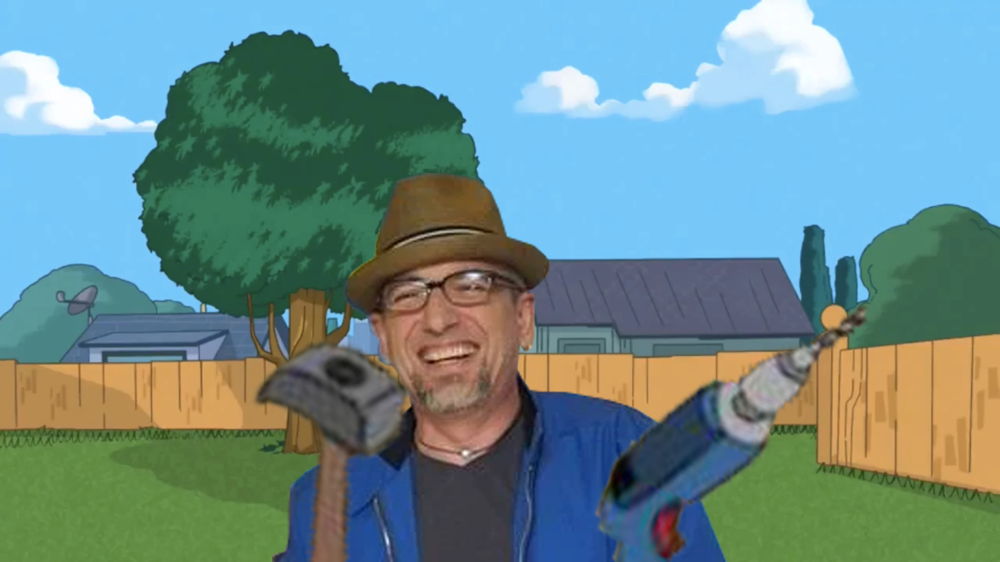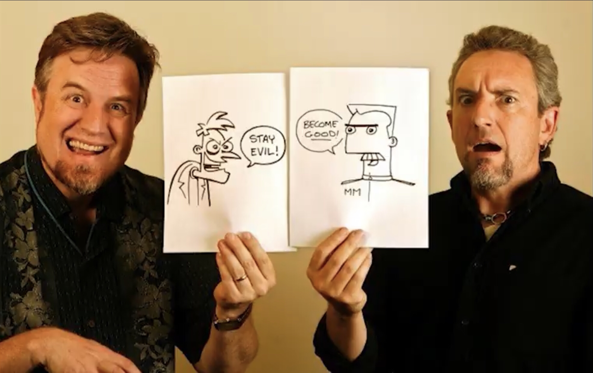
He played as Major Monogram in the show while Povenmire played Dr Doofenshmirtz. Their characters contrasted in the sense that Swampy played a good character while his partner played the "vilain"
Swampy stated in our interview that his fondest memory of working on the show was basically his first time on working on the show. He was living in England, while Dan was living in Glendale. He flew over there to do their first writing session. Dan would then soon come to Europe to go on vacation with his wife and her family and on the way would stop by in England where they would write the rest of the episode.
On 17 August 2007, Phineas and Ferb finally got it's first episode released on Disney Channel. It received over 100 million views and there was lots of demand for an entire season from both Disney and the audiences. The season launched on February 1st, 2008, and all the episodes followed a basic formula to generate its story:
- Phineas and Ferb would start out with an idea of what they’re going to build.
- Their pet Perry the Platypus, sneaks off to fight an evil scientist (Doofenshmirtz).
- Candace tries to bust them by telling their mom.
- Perry and Doof’s fight cause Phineas and Ferb’s project to disappear.
- The mom doesn’t see what their project then offers snacks for the kids to eat and Perry returns.
At one point in the show, one or multiple of these steps in the story would have been either removed or altered but would never have all of them be changed or removed (unless it's a special episode or movie). A perfect example of this is the episode of where "Phineas and Ferb Get Busted!" in Candace's dream which is inside Perry's dream. This is the complete opposite of step 5 in the traditional story which makes it feel new but still has the feel of a traditional episode.
In a typical pre-production stage of Phineas and Ferb, it would start of with Swampy and his team just sitting down in a room and trying to make each other laugh, in the process they make notes of whatever idea or joke they liked and would even draw pictures of anything that could be useful for making the episode, Swampy described this to be "silly" and a reason why he loves working on animation. Making an average Phineas and Ferb (from getting the idea to making the final piece) episode would take them about 9 to 10 months. This is for making two “segments” since an episode is technically 11 minutes long but would come in pairs. When he started making the show, they were making storyboards on sticky notes and paper but as technology improved, they switched to using tablets.
Although making Phineas and Ferb is a lot of fun for Swampy and Dan, there are still some times where he was limited of what he could do. An example of this included not adding in imitable behaviour for kids that could be potentially dangerous or unsafe. However, an even earlier example of what he couldn't do was the fact their character (specifically Doofenshmirtz) was not allowed to use the word "divorce". In a meeting, someone told him that they had to take the word out of the script. This shocked Swampy and he stopped to say "Excuse me, why?". He got offended by it as he came from a family where his parents are divorced, so he saw it as normal. An executive said that the word might trigger a kid who comes from a family of divorced parents but Swampy thought it could do the opposite and make the child feel included, heard or the fact that their situation is okay to talk about. He got angry by this and said he wouldn’t work on the show. He went home that evening and told his wife he thinks he just got himself fired. The next day, he was thrilled to realise that the head executive said he was right and that they could use the word divorce.
When it came to the actual show, one of the biggest highlights of the show was its music. While working on season 1, Dan and Swampy wrote songs for some of their episodes. The higher-ups at Disney loved the songs so much that they requested every episode after that point on to have at least one song in it. Thanks to Swampy and Dan’s experience with writing songs on previous shows and the fact when Swampy was a child, his family was into music, having a song for each episode was not an issue whatsoever. The songs were mostly so good and catchy that it was one of the reasons Phineas and Ferb did well when it aired.
Although he worked on the show for a long time, he never considered quitting Phineas and Ferb to pursue another idea that could’ve been more successful. He and Dan tried to get Phineas and Ferb into a show for 13 years and ones they’ve started, they weren’t going to let it go at all. He loves the show and would never change anything about it, to him it’s perfect. He is very grateful that Disney allowed them to end the show the way they did. If we were working on multiple projects, he would let the other projects wait first but would always put Phineas and Ferb on his first to do list. To him, if he wasn’t remembered for anything else other than Phineas and Ferb, he would be “absolutely fine with that”.
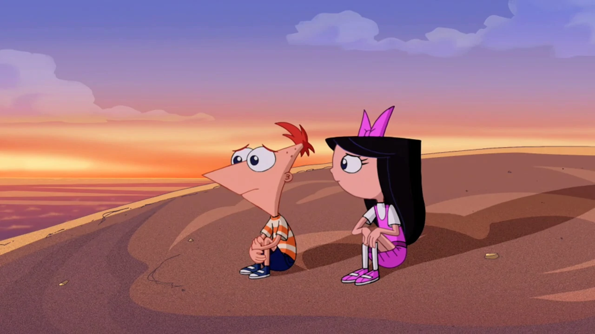In terms of scenes that were planned but never materialised, they had lots of ideas that although is very funny, just wouldn’t make sense to give a compelling story. A specific example is letting Phineas get into a position where he has completely given up (in the episode Summer Belongs to You). In order to do this right without violating his character was extremely difficult. Another example is the idea of Phineas and Ferb having a feud. Although this can happen, for an 11-minute Phineas and Ferb episode, it just won’t work especially if it feels like it just comes out of context. In summary they just can’t make decisions that would violate a character as it would make them stop feeling like themselves and, in a way, the characters will start to feel fake to not only the audience but also Swampy and his team. Despite this, they were still able to show traces of the ideas but through an indirect way, for Phineas giving up, they made Isabella also be in the scene so she could motivate him to not give up. As for Phineas and Ferb having a feud, they put that whole concept into a special, Phineas and Ferb: Star Wars, in this way it didn't go against their characters for the actual show.
The great thing about writing songs for him was he would know what the subject matter is they need to write about. An example is Squirrels In My Pants (S.I.M.P.) where they would look at things that inspire them like using a rap song or any type they like if it works with the mood of what they’re trying to convey in the episode and it moves the characters and plot along, it will do.
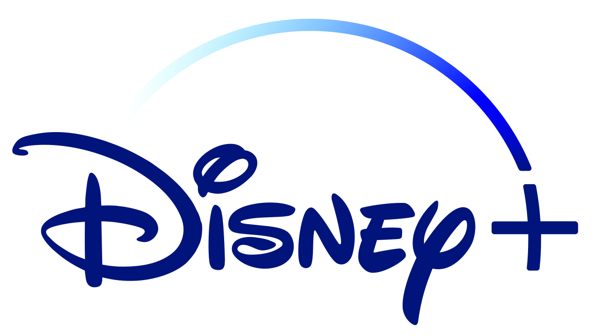
The Impact of Phineas and Ferb was so huge that there are still places in the world where they’re selling Phineas and Ferb & Perry merchandise. Thanks to the internet and TikTok, the show has gotten another chance to gain more fans and it’s still one of the top viewed shows on Disney+. Despite their willingness to make the show continue, it’s still not his and Dan’s decision to continue the show – it is Disney’s but as soon as Disney says they’re ready for the show to come back, Swampy and Dan will be very happy to work on it again.
One thing he and his team has learnt while making the show is that generating ideas for creativity is analogically a muscle rather than a well that will eventually run dry. In his eyes, the more they exercise the “muscles”, the more ideas they’re going to have, hence will never run out of any. Their advice to anyone creating a show is that they shouldn't think they will only have one good idea. Thie is due to leading to overprotective of an idea that it may not be able to expand it out into multiple ideas.
The episode he enjoyed the most to make was the Star Wars crossover since he is a Star Wars fan, him being able to play around with the characters in that universe was a dream come true. They were locked in a secret conference room that no one was allowed in since the project is top secret. All the Star Wars nerds in the crew brought in their Star Wars toys/models to act like a bunch. However, the episode that was the most fun for him to make was the very first episode – there's nothing more he enjoys than sitting with Dan alone and making animations, which is exactly the reason the show existed in the first place.
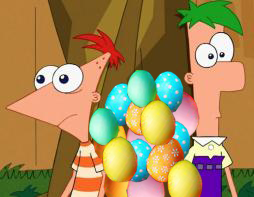
Easter Eggs of Phineas and Ferb
The show wouldn't be as big and exciting as it is without the many little easter eggs thrown in it. There are so many example that give the show re-watch value:
- O.W.C.A. was inspired during his career on computers, he based the name on a computer called Technology Without An Important Name (TWAIN).
- In summer belongs to you, when Phineas and his friends were stranded on an island, Phineas finds a starfish and sponge and claims it’s “ridiculous”, this was Swampy and Dan’s way of making fun of nickelodeon for not accepting their show.
- In the episode, "Phineas and Ferb: Mission Marvel", when Candace asked the superheroes to look at her fanfiction, they rejected because of the potential for them to be tempted to steal her idea. In real life, Swampy & Povenmire weren’t allowed to read or look at fanfiction about Phineas and Ferb while making the show to make it less tempting for them to steal the ideas.
Working on Milo Murphy's Law
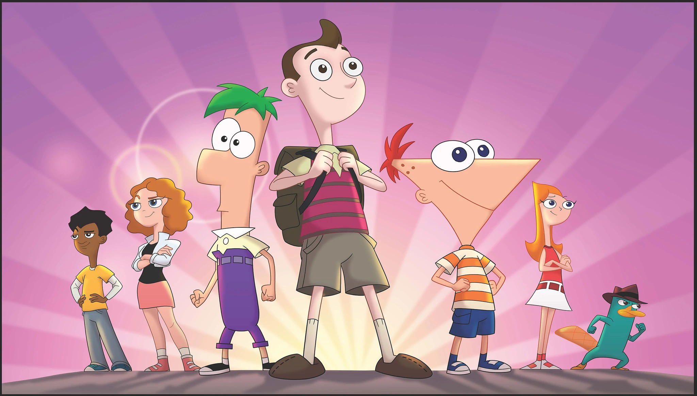Towards the end of making the final episode for Phineas and Ferb, during his free time, Dan brought in a drawing of Milo and discussed about how the character should have his own show and they thought instead of characters like Phineas and Ferb where everything goes right, they would make the character where everything goes wrong ( Murphy’s Law). In simple terms, Murphy’s Law states that "anything that can go wrong will go wrong", this saying has been repeated and emphasises in the show so many times (especially by Milo or any of his close friends or family) to remind the audience what Murphy’s Law actually means From there, they wrote the episode in about 2 hours. Dan storyboarded the opening sequence and they eventually pitched it 2 weeks later.
The show followed a much different approach to telling the plot than Phineas and Ferb. Unlike it's predecessor, the show required the audience to watch the show in order or else they won't understand any of the later episodes. Whilst some episodes of Phineas and Ferb needed the audience to watch a previous episode, it's still possible to watch the whole show in any order. As a result, when it came to making an episode, the average time for making one was like Phineas and Ferb (about 10 months). Since Milo had scripts, they wouldn’t have spent much time in the storyboard phase but due to the complex nature of the story arc, they had to spend a lot more time on the writing section compared to Phineas and Ferb, so this eventually led to the same amount of time for making one MML episode.
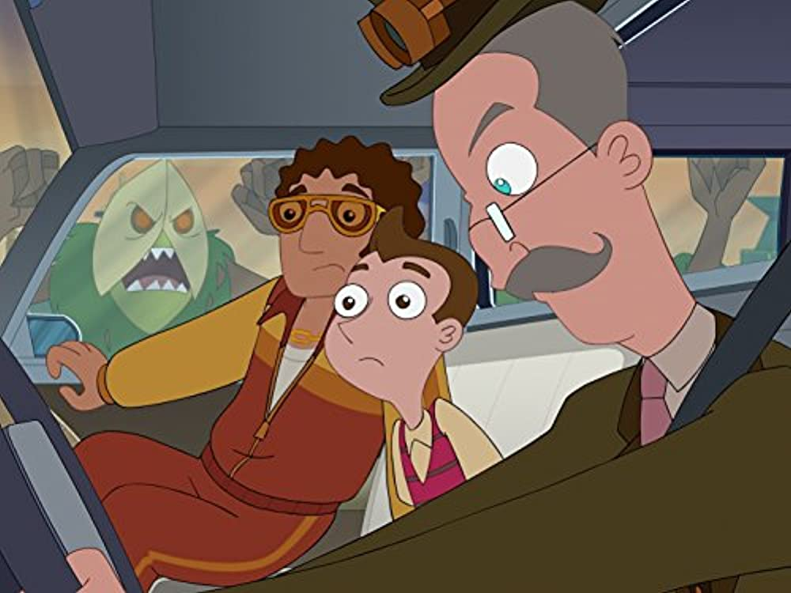He played Cavendish in the show while Povenmire played Dakota, instead of both being enemies with each other, their both time travellers and they're willing to help each other no matter what it takes. This is the complete opposite of their characters from Phineas and Ferb whomst hated each other
Unfortunately for him and Dan, the show was initially released on Disney XD and this became a problem in terms of the show not having as full of a potential audience as Phineas did, generally any cartoon shows in this channel never did so well (would even get at least 3 seasons). As a result, up to the current date, Milo only has 2 seasons.
Despite MML not being as successful as Milo Murphy’s Law, Disney apologised to Dan and Swampy for the way they mistreated their show as they didn’t let it live up to its potential. Despite this, they still didn’t let MML continue since there wasn’t enough demand for it. They delayed Season 2’s release because they wanted Dan & Swampy to make CATU.
Working on Candace Against the Universe
Despite being pitched a season 3 of MML, the Disney executives weren’t interested in it, so they just let the MML cast stop working on the show apart from those who stayed to help make Candace Against the Universe, which included Dan and Swampy.
After he and Povenmire worked on MML’s season 1, they worked on Candace Against the Universe. The movie didn’t follow a traditional episode formula but kept the basics to make it seem like a Phineas and Ferb movie without violating anything to make it feel out of place.
Current job
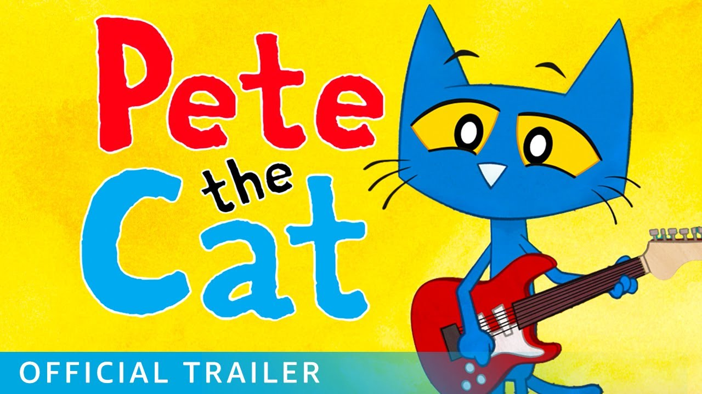As of right now, Swampy is currently working on the show "Pete the Cat" as a developer and the voice of Pete's Dad in the second season.
Watch the interview we did with Swampy where we asked him 27 questions
Follow Swampy on his social medias:
Swampy's family tree:
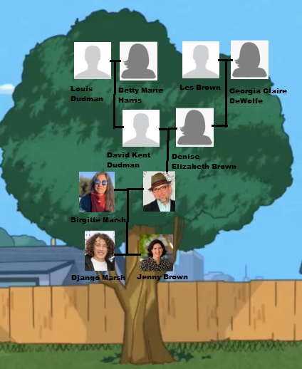The name of Swampy's kids were also used as the name of two other characters in the show (that are also siblings) being Jenny Brown and Django Brown.
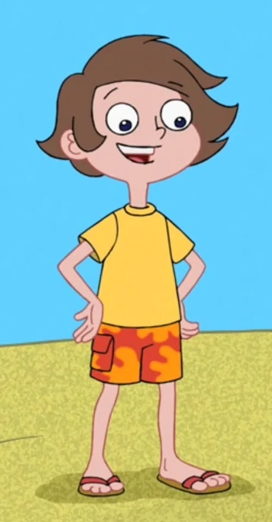 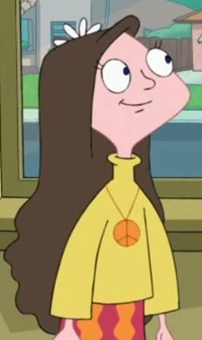